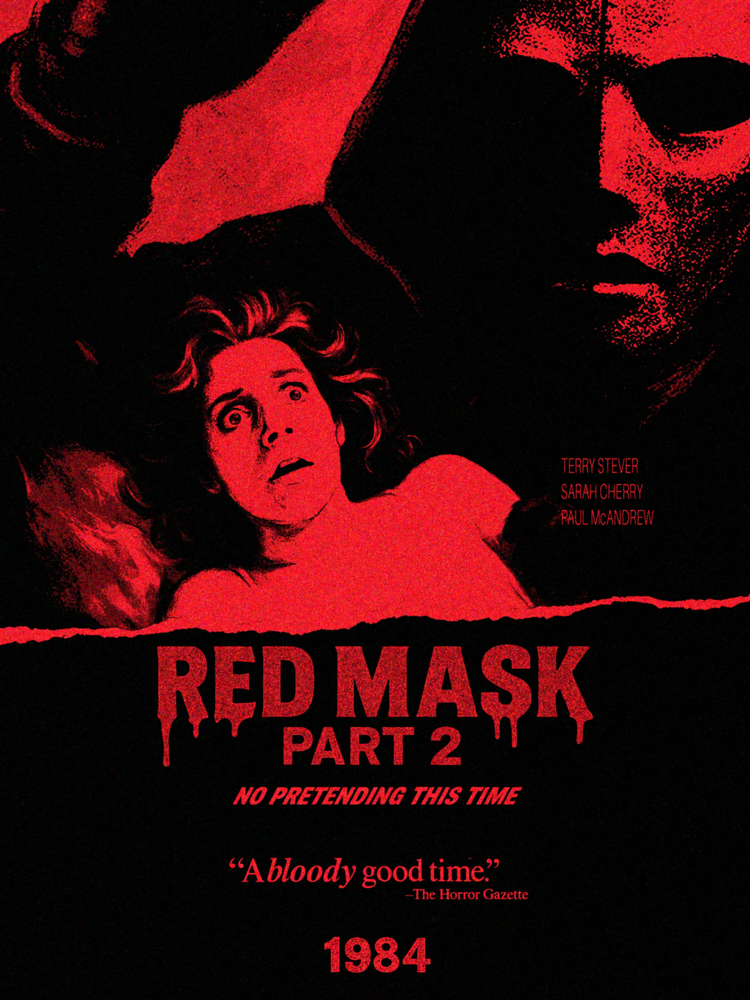
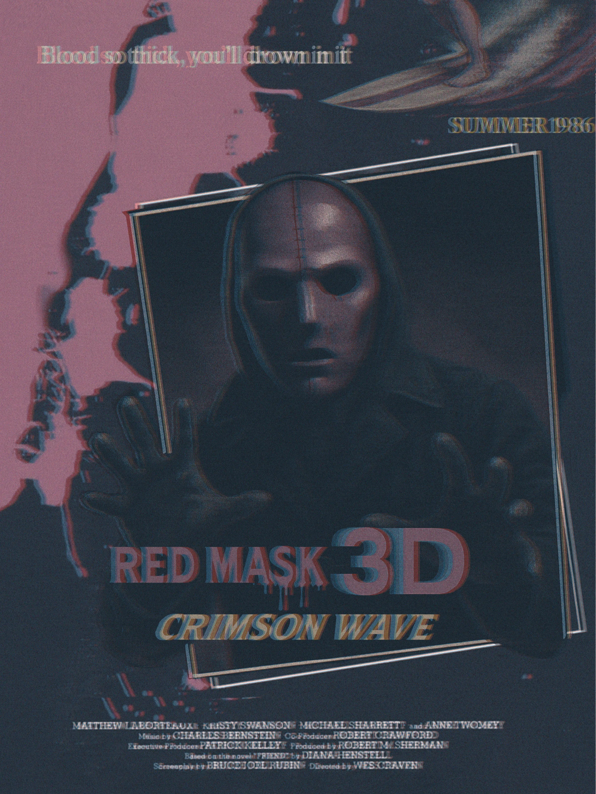
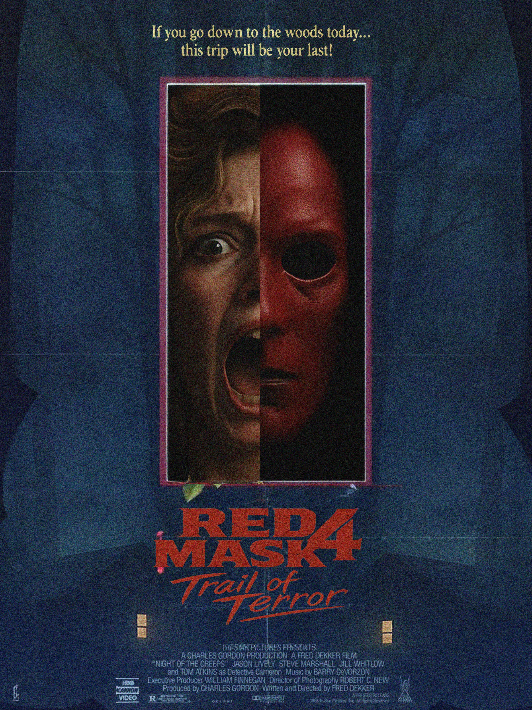
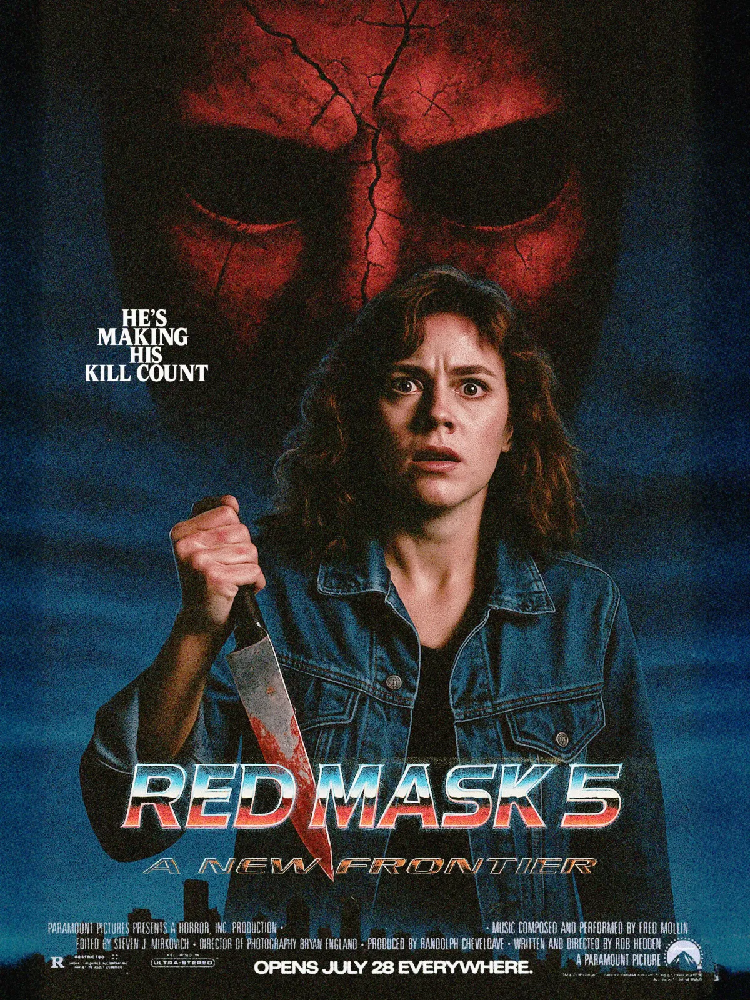
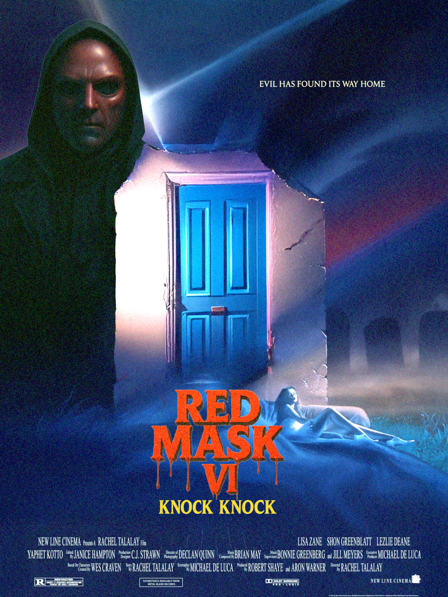
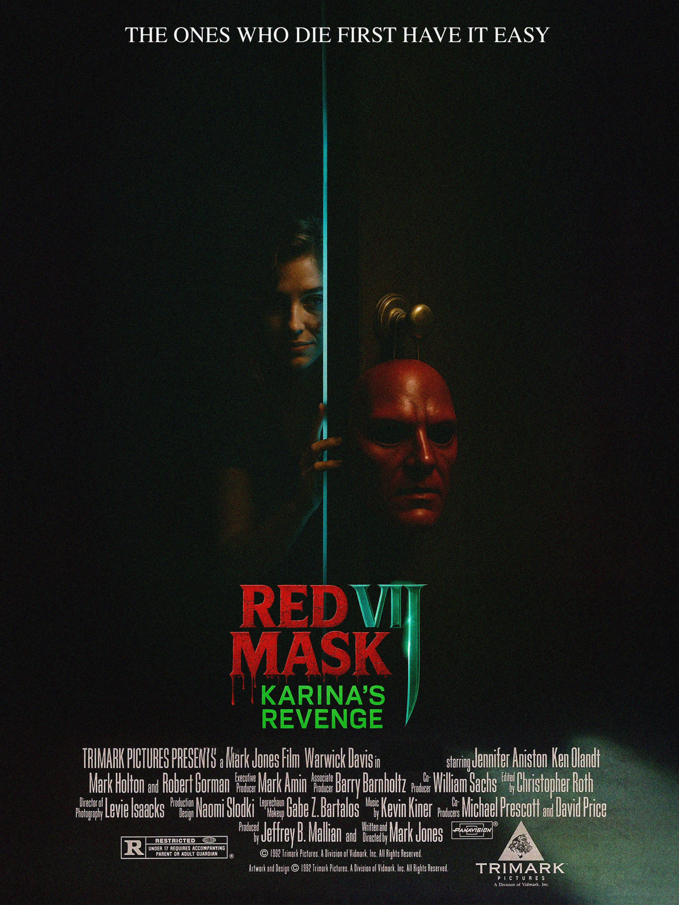
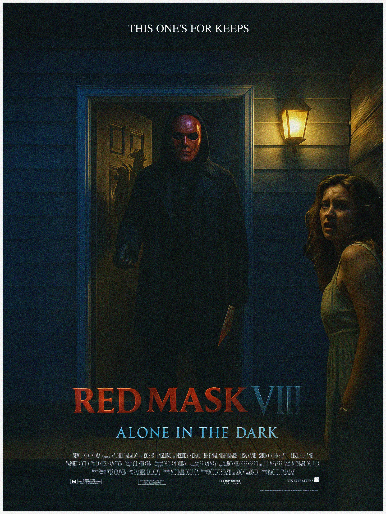
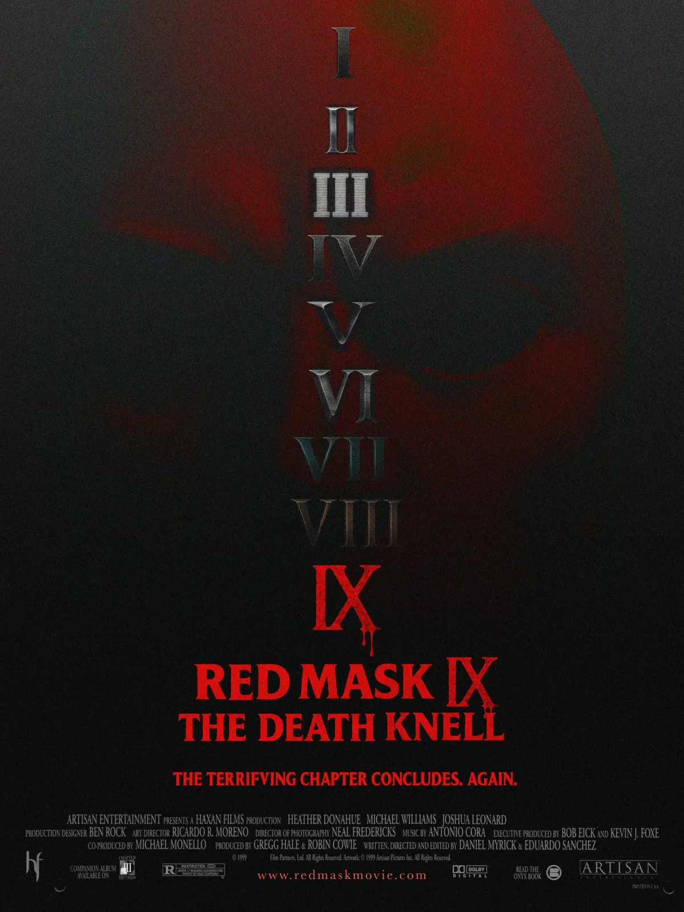
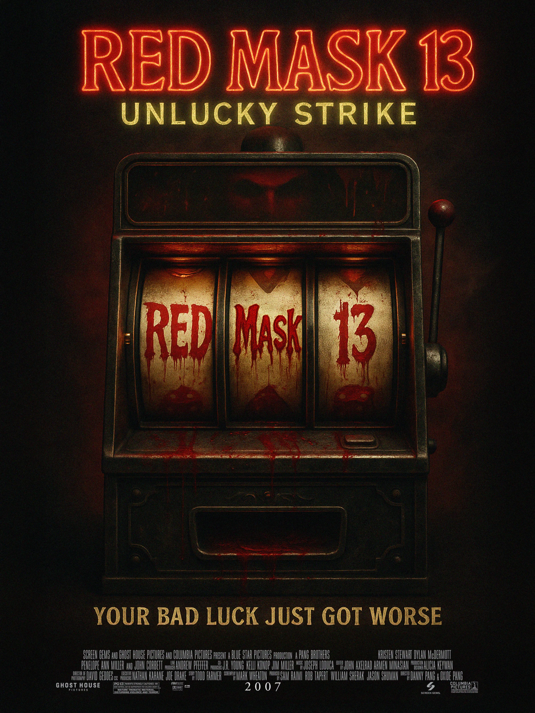

Commissioned by Ritesh Films to design a series of thirteen fictional movie posters that build the world of Red Mask, an independent feature. Each poster is conceived as an artifact from a specific year across a twenty-five-year arc of an imagined horror franchise — researched in depth to mirror the visual language of its era, from typography and color palette to taglines, distributor marks, and printing conventions of the period. Together, the set functions as a graphic timeline embedded within the film's narrative universe.
The Series
thirteen posters spanning a twenty-five-year arc of an imagined horror franchise









